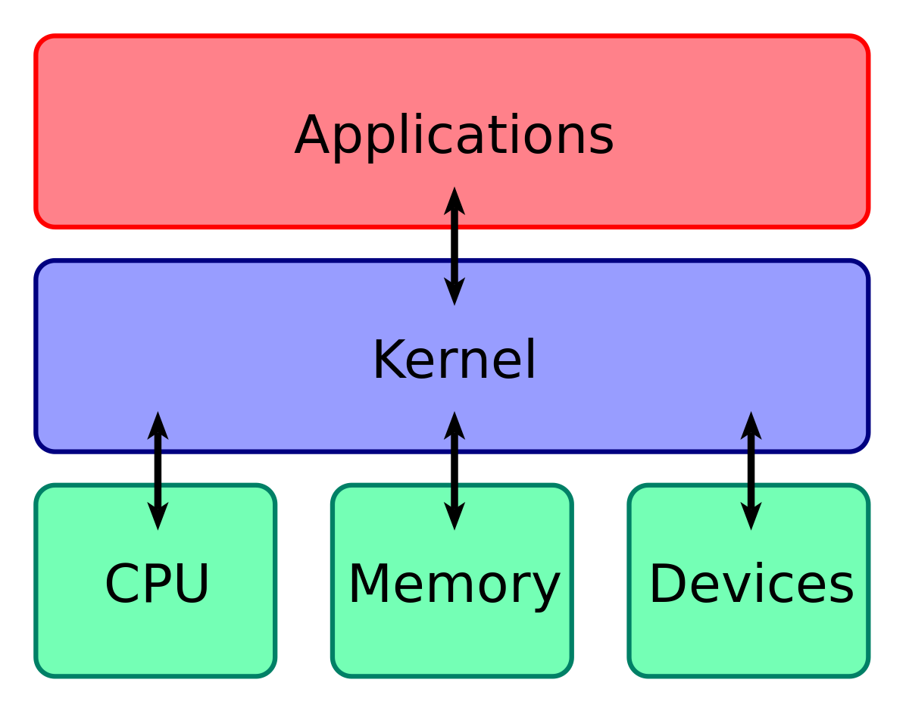

O termo "Kermel" refere-se à parte central e fundamental de um sistema operacional. Ele atua como uma ponte entre o software e o hardware, gerenciando recursos do sistema, como processos, memória e dispositivos de entrada/saída. O kernel é responsável por fornecer uma interface para que os programas possam acessar esses recursos de forma segura e eficiente, garantindo o funcionamento adequado do sistema operacional como um todo.
Kermel
